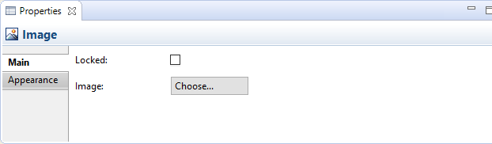
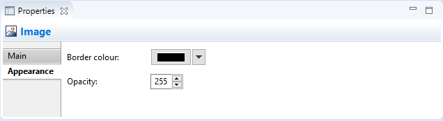

Canvas Image
An Image object is a place-holder for an image. You can lock the Image object if you want to make it read-only. Images can be any size but we suggest that you keep them reasonably small so as not to consume too many resources.
 When resizing an image with the mouse you can hold the Shift key at the same time in order to maintain its aspect ratio. Alternatively, you can select the image object and select the "View->Position->Reset Aspect Ratio" menu item (also available on the toolbar).
When resizing an image with the mouse you can hold the Shift key at the same time in order to maintain its aspect ratio. Alternatively, you can select the image object and select the "View->Position->Reset Aspect Ratio" menu item (also available on the toolbar).
Properties
Selecting an Image in a Canvas View means that you can edit or view the following properties in the Properties window.
The Main Tab

Main Properties for a Canvas Image
| Locked: |
Selecting this ensures that the Image cannot be moved or edited. |
| Image: |
Select an image for the object or clear the image. See "Adding Images to Objects" for more details. |
| Documentation: |
A space to enter some user documentation relating to the Image. |
The Properties Tab
For more information about creating and managing User Properties see User Properties.
The Appearance Tab

Appearance Properties for a Canvas Image
| Border colour: |
Sets the colour of the border used for the selected object. The "None" button removes the border from the object. |
| Fill Opacity: |
Set the fill opacity of the figure. Range from 0-255. |
| Outline Opacity: |
Set the outline opacity of the figure. Range from 0-255. |